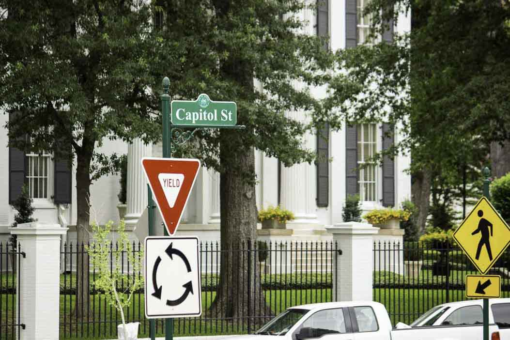
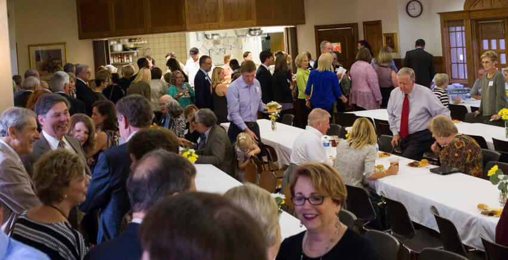
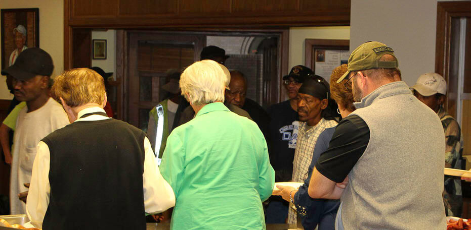
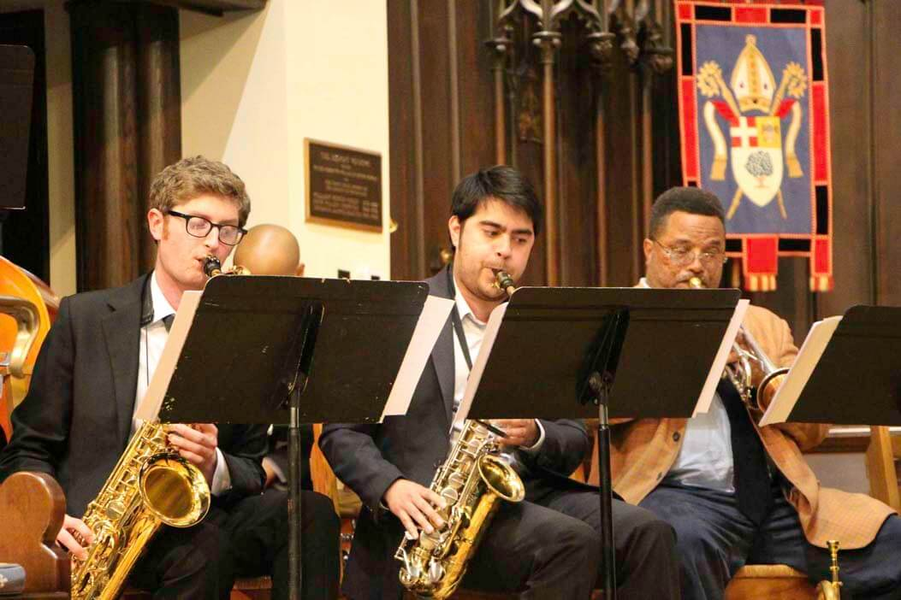
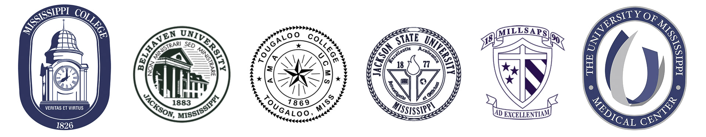
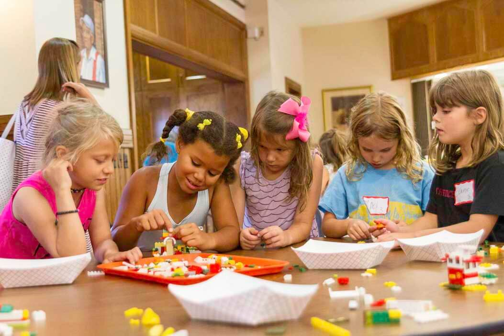

Our Community of Faith: An Invitation

The Episcopal Cathedral of St. Andrew, a downtown parish located in the middle of Mississippi’s capital city, Jackson, is seeking a new dean. Established in 1839, this parish of 1,218 communicants seeks a priest who will guide, teach, empower and walk with us through our next period of ministry. Designated in 1966 as The Cathedral of the Diocese of Mississippi, now led by the Right Reverend Brian R. Seage, this strong and resilient parish endeavors to create a space where all who enter will experience the overwhelming love of God in Jesus Christ.
The Cathedral’s location places us in the very center of state government. Across the street is the Governor’s Mansion. Within a few blocks one will find the State Capitol, Federal Courthouse and other government buildings. Our location also places us in the midst of a wealth of renowned museums, musical, literary and cultural events, academic institutions, artistic performances and outstanding restaurants. Nearby are the University of Mississippi Medical Center and other notable healthcare facilities.
Historically the Cathedral’s downtown location placed us at the center of Mississippi’s struggles related to slavery, segregation and racism. We continue to take leadership roles in addressing these painful issues.
St. Andrew’s offers many and varied opportunities for worship. Four services on Sundays include Rite I at 7:30 a.m., Rite II at 8:45 a.m. and 11:00 a.m. and a Community Evensong at 5:00. The Holy Eucharist is offered each weekday. Healing services, memorial services and seasonal observances are staples of our life together. Inspired preaching and teaching enrich our common journey and equip us for ministry.
A host of lay-led ministries enlivens this parish inside and out. Through guilds, commissions, committees, and study groups, active parishioners are a central part of liturgical life, formation opportunities and the support and care of communicants and neighbors alike. Known as founder of several well established ministries throughout Jackson, St. Andrew’s continually provides leadership and support to organizations which strive to assist the most vulnerable in our city and metro area.
This parish is a strong community that celebrates each other’s accomplishments and nurtures one another through times of difficulty. We are now emerging from two years of healing wounds and are ready to embrace a new leader…one who will love, challenge and inspire us as we seek to be Christ’s hands at work in the world.
You are invited to read on and learn more about who we are. Consider the significance of our rich history and bright future. Learn what brings us joy and life as a community of followers of Jesus Christ. Perhaps a common path is unfolding between you and the Cathedral of St. Andrew's. Come and see.
Come and See: A Place of Radical Welcome
Who We Are
Our recent parish canvass revealed a congregation that sees itself as “a broad church. open-minded, deeply spiritual, and committed to each other and the wider community.” We embrace different backgrounds in race, culture, sexual orientation, soci-economic status and with different approaches to spirituality.
We are diverse in our political opinions and in our theological opinions, while being tolerant and respectful of one another. We come as sisters and brothers to the altar rail. We aspire to be a place of radical welcome.
Being a place of welcome, acceptance, tolerance, inclusion, and mostly love brings people in and keeps them coming back.
| A St. Andrew's Parishoner
We support the rights of people whose voices are least heard. We are proud of our history but recognize there remain opportunities to be a force for change in important contemporary issues.
We are a congregation that craves the community of small groups, be it for study, worship, fellowship or play
We must remain relevant to the next generation:
We try to reconcile the Gospel we’ve read with what we hear from the pulpit and see before us. We are looking for a community of Christ followers who are willing to take risks and have difficult conversations out in the open. Imagine what that kind of love could do? Yes, I want fellowship and community, but I’m here because I want to be a part of the Body of Christ.
| A St. Andrew's Parishoner
Our membership has a stable and growing core:
I fell in love with St. Andrew's the first time I entered it. I was in the 9th grade and was invited here by a friend. The minute I walked through the door, I knew I had come home. Everything about it touched me at the deepest reaches of my being. It was where I belonged. Regardless of where I have lived, St. Andrew's has continued to be my 'home.' It has been the site of the most significant and life-changing events in my life. It is part of my DNA.
| A St. Andrew's Parishoner
Even though St. Andrew’s has a history of welcoming the stranger and standing against injustices, our congregation does not reflect the racial or socio-economic diversity of the city or those who are marginalized. We seek to understand what this means for us as the "Cathedral in the City." Not just any city, we are a city in the heart of the South and one that stands to be recognized nationally for its reconciling posture and bold preaching of the Gospel.
Diversity in the church is important, especially to the youth of today and the generations that follow. How can we be true to our deeply Anglican liturgical identity and practices, while also working to be more inviting and accessible to other cultures and races?
If we are authentic in our worship, activities, and support of them we will attract and retain future generations. The Community Evensong is an example of that.
| A St. Andrew's Parishoner
Expanding program offerings, lifting up more opportunities for diversity in our leadership such as age and ethnicity, and elevating new and rarely heard voices are ways to extend the kind of radical hospitality that we believe will draw others to our pews and better mirror the God's Reign.
St. Andrew’s parishioners drive an average of twelve miles to attend services and events at the Cathedral. We draw from over a dozen zipcodes that extend beyond the counties of Hinds, Rankin, and Madison
| Map Location | # Families | City | Zip | Percentage |
|---|---|---|---|---|
| A | 161 | NE - Jackson | 39211 | 29.98% |
| B | 75 | Belhaven - Jackson | 39202 | 13.97% |
| C | 56 | Madison | 39110 | 10.43% |
| D | 55 | Fondren - Jackson | 39216 | 10.24% |
| E | 48 | Ridgeland | 39157 | 8.94% |
| F | 29 | Reservoir - Brandon | 39047 | 5.4% |
| G | 25 | Fondren - Jackson | 39206 | 4.66% |
| H | 13 | Clinton | 39056 | 2.42% |
| I | 7 | Flowood | 39232 | 1.30% |
| J | 6 | Brandon | 39042 | 1.12% |
| K | 6 | Pearl | 39208 | 1.12% |
| Other | 56 | Other | Other | 10.43% |
How We Worship
Worship is the center of our life together at St. Andrew’s and the liturgy is a compelling and unifying experience for parishioners. We use all forms of Rites I and II during Sunday morning services, as well as for baptisms, marriages, funerals, and other special services. Enriching Our Worship and Wonder, Love, and Praise add variety. There is an openness to alternate liturgies, other traditions and prayers, and more inclusive and expansive language is being introduced.
I have always viewed St. Andrew's as 'broad church.' We have a respectful approach to the core liturgical traditions of the church, but we do not get so hung up on the right and wrong way of doing things that we put off visitors.
| A St. Andrew's Parishoner
The recent addition of Community Evensong was organized by a group of young adults, though not exclusively. It has opened a space for a more flexible and informal approach to new readings and music within the liturgical framework set out in the Book of Common Prayer.
In the Evensong service, we have the freedom to try different kinds of liturgies, incorporating Taize music and prayers and litanies from Christian thinkers like Henri Nouwen and Richard Rohr. This freedom has given us a feeling of ownership over our involvement at the Cathedral and a deep engagement in our own faith journeys.
| A St. Andrew's Parishoner
The laity plays a significant role in every service. There is a strong corps of well-supervised acolytes, trained at a level befitting our Anglican-style services. Talented Altar Guild and Flower Guild members perform their duties with joy and often under the radar, but their holy gifts are much appreciated by all of us. Ushers and greeters form a strong, cohesive team that offers hospitality and guidance every time the Cathedral opens its doors. Readers and chalice bearers are present at all Sunday services and special services.
The full complement of lay liturgical support and music is also present for special mid-week services, including funerals. The Cathedral’s thoughtfully designed columbarium, All Souls Walk, is an integral part of our faith life. Located on the west side of the building, this tree-lined walkway is a place of beauty, solace, and holiness.
A cradle Episcopalian, I came to the Cathedral in my late 40s and for the first time in my life, I discovered what ‘finding a church home’ meant. The liturgical style and practice had a lot to do with that.
| A St. Andrew's Parishoner
The Cathedral continues to be accountable to our Anglican heritage and responsive to a contemporary congregation. Our current worship knits us together while also allowing room to stretch.
The Significance of Music
Throughout our history, music has been an integral part of our worship and our spiritual formation. The Cathedral is known for its superb music, organized choirs, and individuals of extraordinary musical talent. It is often the music that first draws newcomers into our midst. Our organist and choirmaster, Jessica Nelson, enables a strong and vibrant music program.
Our mainstay has been music in the Anglican tradition. We have seperate choirs for the 8:45 a.m. and 11:00 a.m. services. Although the two choirs have different memberships and often rehearse different anthems, the style between the two services is fairly similar. Periodically we have had a Children’s Choir, and there is a desire to build this component of our worships we are calling for more participation by children in worship.
In recent years, selections by our Youth Handbell Choir and the occasional inclusion of Jazz, Bluegrass, and Cajun Music, and Bluegrass, have added variety and enjoyment.
I love our generally traditional liturgy and welcome the occasional departure from it…. I feel strongly that as the Cathedral we should offer a worship experience in which all feel welcome and ‘at home.
| A St. Andrew's Parishoner
Cathedral Chronology
A Strong Presence since 1839
St. Andrew’s Church was established as a mission in 1839 with eight recorded communicants, and was admitted to the Diocese 1843. The congregation worshiped in various places until it acquired its first building located at the southeast corner of President and Amite Streets, in 1850. This building was destroyed by fire during the Civil War in 1863. A second church building was erected 1870 at the southeast corner of Capitol and Congress. The first vested choir sang at the Easter servcice in 1898 and the rector, the Reverend Arthur B. Howard, commented, "We almost thought we heard the angels sing." That building was outgrown and a third building was built in 1903, just a block away, on the south side of Capitol Street directly opposite the Govern's home. Established as the Cathedral of the Diocese in 1966, this beautiful building is in use today, with several additional buildings having been added through the years. From this historic site, we have offered an Episcopal response through the decades to a deeply souther, but ever-changing city.

St. Andrew’s has a history of fostering new institutions to meet needs as they occur. Our parishioners established the first Boy Scout Troop in the state. We assisted in the formation of the first African-American mission in the diocese St. Mark’s Episcopal Church in west Jackson. In the decades to follow, St. Andrew’s would assist in the planting of four more missions that are parishes today: St. Columb’s, St. James’, St. Phillip’s, and St. Alexis.

Dr. Vincent Franks served as rector from 1947-1959. During that time St. Andrew’s Episcopal School was founded. Adele Franks, wife of the rector, served as the fist headmistress. The school, which opened in the Parish Hall in 1947, became the first independent school in the area. From its beginning, the school was committed to welcoming students of all races and ethnicities when other schools in the area did not. The Cathedral dean serves as an ex-officio member of the school board. Three Episcopal chaplains, who are also Associate Clergy at the Cathedral, serve as spiritual leaders, teaching, counseling, and conducting weekly chapel services. St. Andrew’s Episcopal School is known today for its high quality of academics and for its multi-cultural and racially diverse student body. Twenty percent of the 1,172 students enrolled in the past academic year were Episcopalians.
Our Role as Flagship
For close to two centuries, St. Andrew’s has held Sunday services for its communicants, visitors, and those just passing through. In our capacity as cathedral parish, we welcome the role of hosting diocesan services and events. We understand the importance of being involved in diocesan leadership through various leadership roles. We have an obligation to model meaningful and expansive liturgy, responsible stewardship, and generous outreach.
Through the decades we have been a place of welcome, comfort, and dialogue:
- South Sudanese refugees were welcomed and assisted upon their arrival in Jackson and conducted weekly Dinka services in our chapel for over a decade.
- We host an annual powerful city-wide 9/11 service of prayer and remembrance honoring first responders.
- The Cathedral in November 2013 hosted The Episcopal Church’s initiative to expand the dialogue around racial healing: “Fifty Years Later: The State of Racism in America.”
- St. Andrew’s parishioners coordinated a December 2017 city-wide historical remembrance of the church “Kneel-ins” which took place as part of the Civil Rights Movement in the 1960s.
How we became a Cathedral
In 1966, during the tenure of The Right Reverend Duncan Montgomery Gray, Sr. (the first of three Bishop Grays), then Bishop Coadjutor, The Right Reverend John Maury Allin, put in motion a plan to establish St. Andrew’s as a cathedral parish. (Allin succeeded Gray, Sr. as the 6 th Bishop of Mississippi, and was later elected as the twenty-third presiding bishop of The Episcopal Church.)
The rector of St. Andrew’s during this period, the Reverend Christoph Keller, would establish an important role for the soon-to-be Cathedral by responding to the racial tensions of the time. The day following Medgar Wiley Evers’ funeral in Jackson, he welcomed a group of African-American worshippers into the Sunday service (June 16, 1963). His courage was joined by lay leadership, as recorded in this well-known personal account by Anne Moody.
When we walked inside, we were greeted by two ushers who stood at the rear. ‘May we help you?’ one said. ‘Yes, I said. ‘We would like to worship with you today. ‘Will you sign the guest list, please, and we will show you to your seats,’ said the other. I stood there for a good five minutes before I was able to compose myself. I had never prayed with white people in a white church before…we were then escorted to two seats behind the other two girls in our team. We had all gotten in…. It was as normal as any church service…. When the services were over the minister invited us to visit again. He said it as if he meant it, and I began to have a little hope.
| from Coming of Age in Mississippi by Anne Moody (Dial Press, 1968)
Six successive deans would follow, contributing distinct and significant gifts in each of their respective tenures. A couple of these tenures also presented serious challenges to congregational unity and membership, but the parish weathered these difficult periods and moved forward.
The seventh, and most recent, dean accomplished quite a lot in his tenure. The parish successfully completed a $3.1 million capital campaign that transformed and repurposed many parts of our historic footprint. The ranks of young adults and young families as regular members significantly expanded during this time. The still-popular, Dean’s List, (a monthly gathering of men for dinner) was begun, with proceeds benefiting general outreach. These are recognizable and positive legacies.
His time as dean of St. Andrew’s Cathedral, however, ended abruptly with his resignation in July 2016. Subsequently, in January 2017, he was deposed from the ordained ministry of The Episcopal Church for violations of standards of conduct. This event was deeply distressing to St. Andrew’s parishioners, clergy, and staff. Our bishop lived fully into his episcopal role as chief pastor to heal hurts by engaging outside professional resources and being available for questions.
Resilient and Ready
In July 2016 a supportive interim period began with the pastoral talents of the Reverend David Elliot, a longtime and beloved priest in the diocese, and Interim Dean the Very Reverend Ron Pogue, whose special training and managerial talents have guided us since August 2017. During this interim period, the wardens and vestry have taken several specific actions that have moved us to a new place of strength and stability:
- New governance procedures ( by-laws and fiscal controls) have been put in place to ensure transparency and accountability. Fully vetted, these measures were enthusiastically adopted by the congregation.
- New human resources guidelines have been developed and reviewd by the vestry.
- Reinstatement of the commission structure (each with a designated vestry liaison) and reinvigorated guilds provide a solid framework for brainstorming and developing programs in Evangelism, Christian Formation, Liturgy and Music, Pastoral Care, Community Partnership, Stewardship, and Parish Life.
- There are well-functioning committees that advise the vestry on finance, personnel, buildings and grounds, endowment, investment, and memorials.
- The stewardship emphasis for 2018 yielded a record-breaking high point in pledging history since 1998.
Diocesan Highlights
The Episcopal Diocese of Mississippi was established in 1826. Its jurisdiction serves the entire state. We are part of Province IV of The Episcopal Church’s organizational structure.
The Diocese has a solid history in ecumenical and interfaith relations:- The Episcopal, United Methodist, and Roman Catholic bishops meet monthly and work closely on various initiatives.
- Since the days of the Committee of Concern in the 1960's, the Diocese has enjoyed a strong relationship with Temple Beth Israel, the only synagogue in Jackson.
- The Diocese is a member of the Mississippi Religious Leadership Conference, a statewide interfaith organization that crosses the lines of religion, age, gender, and race.
- The Diocese participated as a major supporter in the development of the Museum of Mississippi History and the Civil Rights Museum of Mississippi.
The Diocese of Mississippi has many robust ministries:
- Camp Bratton Green (CBG)
- The Gray Conference Center
- Happening, Divison of Youth (DOY)
- Cursillo
- Episcopal communities on our college campuses
- Seminarian support
- 2018 Task Force on Racial Reconciliation Conference, “55 Years Later: Becoming the Beloved Community in Mississippi”
- National Conference for the Liturgical Arts
- Annual Conference on Preaching
- Annual Conference on Church Music and Liturgy
- The A.C. Marble School for Spiritual Formation
- Honduras Medical Mission
Tell Them You’re Moving to Jackson, Mississippi!
Jackson was incorporated as a city in 1821. Located today at the intersection of Interstate-55 and Interstate-20, Jackson has been dubbed “The Crossroads of the South.” From January to April, downtown Jackson overflows with legislators, their staff, lobbyists, and other political enthusiasts and leaders. State government is the largest employer followed by the University of Mississippi Medical Center. Nissan, Toyota, and Continental Tire have Mississippi plants, and the Stennis Space Center and Ingalls Shipyard are just a few hours away.
Jackson is rich in arts, artists, and cultural history, as well as educational institutions:
- Mississippi Civil Rights Museum
- Museum of Mississippi History
- Mississippi Museum of Art
- Smith Robertson Museum and Cultural Center
- International Museum of Muslim Cultures
- Mississippi Children’s Museum
- Mississippi Agricultural Museum
- Mississippi Museum of Natural History
- Three local ballet companies
- International Ballet Competition
- Mississippi Symphony Orchestra
- Mississippi Opera
- New Stage Theatre
- Six institutions of higher education, including a major teaching and research medical center
- The first community college system in the country
- The Ross Barnett Reservoir
- The Natchez Trace
- The Mississippi Braves Minor Leage Baseball Team (Affiliated with the Atlanta Braves)
- The Jackson Zoo
Mississippi’s history includes the disenfranchisement and pernicious segregation that fueled the Civil Rights Movement and centered Jackson in the national spotlight with the murder of NAACP Field Secretary, Medgar Wiley Evers. New light shines on significant recognitions and institutions that Jackson and Mississippi have established to heal wounds and relationships:
- The Evers’ family home in Jackson has just been added to the National Registry of Historic Places.
- Our progressive mayor and conserative governor, with support from a philanthropic foundationprivate philanthropy, created the Better Together Commission to tackle the challenges of the capital city’s public education system.
- Jackson is now home to the William Winter Institute for Racial Reconciliation, named for one of Mississippi’s most progressive governors.
With six institutions of higher learning in jackson, we are the academic home for thousands of young people. Our permanent population is also young, with almost 50 percent of Jackson’s under the age of thirty-five. There is enormous redevelopment momentum among businesses, community and cultural organizations propelling Jackson forward.
A major downtown renovation plan includes apartments, new artists’ lofts, and retail space as well as new office space.. The buildings adjacent to St. Andrew’s are being renovated to create apartments.
Many renowned restaurants, both casual and formal, are located in this area. Festivals, races, exhibits, concerts, and all manner of special events take place here as well. New and progressive stories are being written by the next generation of Jacksonians. Our Cathedral is excited to be engaged in downtown Jackson’s renaissance.
Stay and Learn: Formation for Ministry
Adult Formation
Presently, Christian formation is delivered in multiple ways at St. Andrew’s. The Reverend Canon Katie Bradshaw, Canon for Lifelong Formation and Mission, in her second year with us, brings great energy and intellect to all aspects of spiritual formation. Her talents lend well to planning for all age groups. Sunday school classes for all generations and cross-generations provide a wide variety of offerings from the study of Biblical text to exploration of contemporary issues. Many of our offerings are led by parishoners.
There are a few long-standing groups that meet regularly on Sunday or a weekday, including for example: Education for Ministry, Enneagram Study, and Theology and Literature.
There have been periodic special programs planned and executed by parishioners such as the “Moving Toward Forgiveness” series focused on the unfinished work of racial reconciliation. Speakers in the Adele Franks Crispin Journey Series such as Rabbi Rami Shapiro on the Sacred Art of Lovingkindness, The Reverend Becca Stevens from Thistle Farms, The Reverend Lynnsay Buehler on centering prayer, and The Reverend Ed Bacon on spiritual formation have been well received.
Recent Lenten Study books have included Richard Rohr’s Falling Upward (Harper Collins, 2011), Atul Gawande’s Being Mortal (Metropolitan Books, 2014), and Gerald May’s Dark Night of the Soul (Harper Collins, 2004).
To be able to share and confide in such an intimate setting, to question and grow together, is very safe, meaningful, and needed.
| A St. Andrew's Parishoner
Participation in small groups is a meaningful method of formation at St. Andrew’s, and we expect such groups to continue. We hope to expand the number of these offerings.
Finally, the popular Sunday morning Dean’s Forum, once a staple of our formation programs, became more irregular during the recent transitions. Parishioners voiced very strong support for its return.
Children’s Formation
Through its history, St. Andrew’s has enjoyed strong leadership for children’s programming. There are talented volunteers and a Coordinator for Children’s Ministries nurturing our littlest ones in the faith and being nurtured by them. There is a real desire to expand children’s offerings, involve them more directly in the worship service, and appreciate the gift of ministry they give to us.
Catechesis of the Good Shepherd, now in its thirtieth year at St. Andrew's, gives children ages three to nine an introduction to the life-long study of Jesus’ teachings. A new volunteer-led program is underway for 4Th and 5th graders. The Bible-based curriculum is designed to provide a good next step for children as they grow beyond Catechesis.
The Book of Common Prayer provides the Church authentic ways to stretch tradition and to create alternative ways to integrate children fully into worship. And, when we take care to do this, the children are clear about what it means to them:
I like going to the Cathedral and seeing the light shining through the stained glass and feeling happy.
| A child at St. Andrew's
During services at present, children participate in “Children’s Chapel” where they learn the structure of the service and are exposed to the weekly Gospel reading. When they join the adult congregation during the Eucharist, the children are invited to sit within the altar rail to experience the preparation of the table up close.
Vacation Bible School (VBS), a perennial favorite, is another avenue for shared ministry between children and adults. VBS has been a great opportunity to invite new families to come and see, so they will stay and learn. This summer’s VBS attendance exceeded 70 children, a strong indication that the spiritual formation of young children may be one of the most potent areas for growth at the Cathedral.

Youth Opportunities and Challenges
Youth ministry has tough competition with the wide span of other activites in which our youth are engaged. Also, they attend a number of different schools, both public and private in the tri-county area, so developing a strong bond among them is challenging, especially when their encounters are Sundays and Wednesdays nights. Part-time youth ministers and adult volunteers have sustained the program in recent years. In that time, youth ministry mainstays have been acolyting and serving lunch at Stewpot, a local feeding ministry, twice a month.
As a result of our last capital campaign, our youth space is much larger and considerably improved. Additionally, after a lengthy search process, we hired a part-time youth minister in the summer of 2018. While there is a desire to eventually make this position full-time, we're hopeful that in the meantime his enthusiasm and dedication will help us revive the youth program. We are committed to building a program that sustains engagement, among participants, fosters their spiritual growth, encourages them to take on leadership roles within the church, and makes the church relevant for them, now and always.
Younger people today are exposed to far more diversity and have a lot more questions about faith. It's rare for people to remain Christians just because their parents were at this point. If we want to remain relevant, we have to be a space that is open to questions and provides a community that supports people who have a lot of questions. There has to be room for that to be okay in order for people to grow and to also provide an attractive community that future generations will want to be a part of.
| A St. Andrew's Parishoner
Caring for Others Within and Beyond
When Jesus sends us, together, to the places he himself intends to go, he goes with us. He goes with us down the road into our neighborhoods and communities, to open doors, to cross thresholds, to spend time in others’ rooms. He goes with us to break bread together, to talk and listen and pray, to heal the sin-sickness of our separation from those to whom Jesus would go, and they bring Jesus to us. It is shared need. It is mutual care.
| The Reverend Canon Jennifer Deaton —from her sermon on the 12th Sunday After Pentecost, August 2016
Reaching In
Pastoral care is very important to us, and we see it as a shared responsibility. There is strong agreement about the value and capacity of our current Canon for Pastoral Care, The Reverend Jennifer Deaton. Now in her seventh year, she is the kind and steadfast face of pastoral care both inside and beyond the walls of St. Andrew’s. . We see ourselves sharing in this ministry as a strong network for each other and for our neighbors.
Many parishioners carry out quiet discipleship within and beyond the established guilds. Parishioners provide daily intercessions, meal preparation, and rides for homebound friends to Sunday services, and weekday appointments.
In addition to unanticipated crises, that call for and receive an immediate response, there are numerous of ongoing pastoral care ministries where parishioners can touch a heart and lend a hand.
- Eucharistic Visitors
- Guild of the Christ Child
- St. Michael’s Guild
- All Angel’s Guild
- Mail Trail
- Parish Visitors
- Befrienders
- Prayer Chain
- Clarence Tree
- St. Clare’s Common Thread
- Ultreya and Reunion groups
- Bread Ministry
- Usher
Reaching Out
St. Andrew’s has a rich history of responding to those in Jackson and beyond who face poverty, disaster, and oppression. We have ministered to those around us as far back as 1855, when yellow fever hit Jackson. In the 1980s, St. Andrew’s parishioners founded or co-founded six new outreach ministries within six years.
During the tenure of the last Dean, however, outreach funding decreased significantly, and the commission supporting these ministries was dismantled. Interim Dean Elliott oversaw the reinstatement of the lay-led commissions and partially restored funding.
Canon Bradshaw and lay leaders soon organized two retreats for the newly reinstituted (and renamed) Community Partnership Commission - the first to foster healing and the second to plan for the future.
With new vision and mission statements in place, the commission has accomplished a great deal in 2018. We recently created a new grant-application process for our community partners, and also hosted a town hall meeting for them, where they exchanged ideas and a representative from the mayor’s office shared the city’s strategic plan. Participants acknowledged the vital role St. Andrew’s has played in their work. For some, our presence and support “have made all the difference.”
The town hall meeting resulted in a clear call for St. Andrew’s to convene our community partners regularly. We are now working to do just that in order to create a stronger network of services for those in need
- St. Andrew's was a key facilitator in the founding and continuing support of:
- Mississippi Food Network
- Grace House
- Rowan Middle School
- McLean Fletcher Grief Center
- Holy Smokers (A group of St. Andrew's Parishoners that enjoy cooking for Parish Events and Charities alike)
- Refill Café
- Stewpot Community Services
- Meals on Wheels
- CONTACT: the Crisis Line
- Working Together Jackson
- Good Samaritan
- Ministries supported with Partners
- Operation Shoestring
- Mission Mississippi Prayer Breakfast
- Springboard to Opportunities
- Habitat for Humanity
- Harbor House
- Diocesan Project Sponsorship:
Representatives of these partnerships participated in a recent town hall meeting, reflecting a broad spectrum of ages, from young people in their late twenties to communicants who have been involved for more than four decades— since their twenties! A representative from the mayor’s office shared the city’s strategic plan with the group to establish a context for all of the work we are doing.
Participants acknowledged the vital leadership and stewardship role St. Andrew’s has played for many decades. For some, our presence and support “have made all the difference.” Service providers and parishioners spoke eloquently about the challenges.
At the end of our worship Episcopalians are sent out into the world. That’s why these ministries are so critical. These (founding) dates are so important. They show that when there is a need, we respond! This conversation is important, so that when we call a new dean, he or she will empower us to this ministry.
| A St. Andrew's Parishoner
There was a clear call for St. Andrew’s to convene these service providers on a regular basis and to develop a clearinghouse of services. There is a sense that many require services from more than one provider. Also, possibly there are duplications in services. St. Andrew’s could help frame an ecosystem where fewer gaps or duplications in services exist, and economic justice becomes the value lens that pushes our work forward.
Beyond traditional outreach programs, St. Andrew's supports cultural programs throughout the city.
Ways We Use Our Building for Outreach
St. Andrew’s has a beautiful and large building in downtown Jackson that also has been used to support the community in a variety of ways. Weely, we open our doors for the Tuesday Morning Breakfast Club where volunteers serve and share a hot meal and coffee with our neighbors experiencing homelessness.
We have hosted meetings and events for partners and community organizations including the Human Rights Campaign, Overeaters Anonymous, Springboard To Opportunities, and others. According to survey results, there is a desire within our congregation to see our building utilized more and remain open throughout the week for the community to use in a variety of ways.
Parish Life
St. Andrew’s always has been an active, fun-loving parish. We are quick to rally around a meal because we enjoy each other’s company. The lines are often blurred between our liturgical calendar and our vibrant parish life calendar.


Meals in the Parish Hall is an anchor for a variety of liturgical events:
- Seasonal Foyer Groups
- Annual Parish Weekend at Camp Bratton Green
- Advent wreath-making
- Shrove Tuesday pancakes with accompanying Mardi Gras parade
- Epiphany Feast of Lights
- Ultreya-hosted reception following the Easter Vigil
- Mother’s Day Brunch
- Annual Parish Party
Currently, work is underway to develop a process for staying in communication with newcomers and creating an onboarding process that moves forward toward membership and involvement. A newly formed Evangelism Commission is spearheading this effort in collaboration with our full-time membership coordinator.
Our Financial Health
St. Andrew’s has a strong financial position with opportunities for growth. The 2018 annual operating budget is $1.4 million, and the 2018 stewardship campaign yielded an increase of over 20% in total pledges. The Cathedral also saw a significant increase in new pledges and in the median pledge. Past generosity has provided a roughly $2 million endowment that is designated for facility repairs, outreach, and other Purposes. St. Andrew’s has a strong financial position with opportunities for growth. The 2018 annual operating budget is $1.4 million, and the 2018 stewardship campaign yielded an increase of over 20% in total pledges. The Cathedral also saw a significant increase in new pledges and in the median pledge. Past generosity has provided a roughly $2 million endowment that is designated for facility repairs, outreach, and other Purposes.We are fortunate to have a Finance Committee comprised of veteran and skilled financial management and investment advisors. All financial decisions are reviewed by the vestry regularly, and the Cathedral finances are audited annually.
The strategy in 2014 and 2015 not to ask for pledges hindered our ability to accurately budget, resulting in an operating deficit that ultimately totaled $240,000. We resumed the pledging process in 2017 to great success. Actions designed to eliminate the deficit have reduced it to less than $80.000 as of July 2018 and we are on track to significantly reduce or eliminate it altogether by the end of this year.
There are many demands on our annual operating budget. Our major operating expenses include:
- Providing a regular and meaningful worship program,
- Meeting our financial commitments in support of the diocese,
- Maintaining a historic church building, and
- Supporting pastoral care and service.
The 2014 completion of a major capital campaign addressed the many of the longer-term capital repairs needed by our century-old facility. The existing endowment and current giving levels provide sufficient funds to maintain a high-quality, beautiful cathedral to support daily worship and frequent parish and diocesan events.
Future financial growth initiatives include maintaining focus on annual stewardship and reinvigorating our legacy giving program.
Building on Existing Programs
As focus groups and round table discussions considered programming under new leadership, a number of ideas were discussed that build on already-established programs. Areas to consider:
- Retain a full-time, adequately compensated youth minister responsible for executing a consistent and robust program, and for lifting up youth into leadership roles.
- Expand opportunities to enrich our lives and increase the diversity of our faith community.
- Develope lay leadership in order to expand the small group opportunities within the parish.
- Enrich experiences for all by bringing children into the adult worship experiences.
- Committing more resources to all of our formation offerings.
- Make Wednesday Night Program regular and keep it robust.
- Adjust programming and publicize existing programming to encourage diversity in participation and recognize stages of life needs.
- Lift up the emerging Community Evensong gathering so it can grow in strength and numbers.
- Effective programing will take prayerful consideration of how to share God’s resources for the benefit of God’s people.
- Mutual discernment will shape the ideas and move us forward. We welcome the ideas and vision of our new dean to help us broaden and strengthen our existing programs.
Call for a New Dean
Come… shepherd us, lead us, befriend us, inspire us. Embrace the St. Andrew’s tradition with a spirit of ‘forward we go’ into anticipating and meeting the ever-changing dynamics of life.
| A St. Andrew's Parishoner
Our recent survey of parishioners identified six characteristics that we we seek in one who would become our new dean:
Spiritual Model
- How will you observe spiritual practices that feed your own soul so that you can feed ours in your preaching, teaching, and public engagement?
- How will you demonstrate the kind of authenticity and presence at the altar that invites the congregation to enter more fully into the presence of the Lord?
- Will you listen with humility in order to lead us with integrity, honesty, and accountability?
- Will you stay grounded enough to put God first in thought, word, and deed and to perform your duties with intention?
Preacher
- Will you preach often and boldly the Good News?
- How will you be a voice of reconciliation within and beyond this faith community?
- How will you help us to recognize lessons in everyday life?
Teacher
- How will you share with us the writings of notable scholars and authors that inform thinking and faith?
- What formats for teaching and learning do you envision?
Pastor
- How will nourish the bonds of trust and accountability?
- Do you feel that pastoring should be evident in all the roles a dean must fulfill?
- How will you recognize and acknowledge areas where we are suffering and lead us to turn our eyes toward the suffering of others?
- How will you help us lift into leadership new, more diverse and younger faces so that others may sense a role for themselves among us?
- How will you be inclusive of differing viewpoints that we might expand our worship, ministries, lay leadership and parish life?
Administrator and Steward of Finances
- Do you have a knowledge of and appreciation for sound business practices?
- In light of our recently instituted protocols and procedures that strengthen accountability and transparency, will you be open with the parish in financial matters?
- How will you work with the wardens and vestry to prioritize the allocation of resources and delegate as may be necessary the management of resources – both financial and physical?
- Recognizing our energy and commitment to stewardship, how will you nurture and challenge us to give fearlessly?
A Person Responsive to the Needs of the Community (inside and outside)
- How will you help us address the tension between the desire to be open and welcoming and the need for a secure worship experience?
- Recognizing the Cathedral’s long standing tradition of community service and mission, how will you strengthen our role of leadership in ministry formation, partnership creation and civic engagement?
- How will you help us continue to strengthen and expand the Cathedral’s leadership role in the diocese?
Should you discern a call here, we are ready to welcome you into ministry with us. Come! Join our journey!
May the One We Long for, Long for Us.
Blessed be the longing that brought us here and quickens our souls with wonder.
May we have the courage to listen to the voice of desire that disturbs us when we have settled for something safe.
May we have the wisdom to enter generously into our own unease to discover the new direction our longing wants us to take.
May the forms of our belonging – in love, creativity, and friendship – be equal to the grandeur and the call of our souls.
May the one we long for long for us.
May our dreams gradually reveal the destination of our desires.
May a secret providence guide our thoughts and nurture our feelings.
May we come to accept our longing as divine urgency.
May we know the urgency with which God longs for us. Amen.
| -adapted from John O’Donohue’s “The Longing” from >To Bless the Space Between Us (Doubleday, 2008)